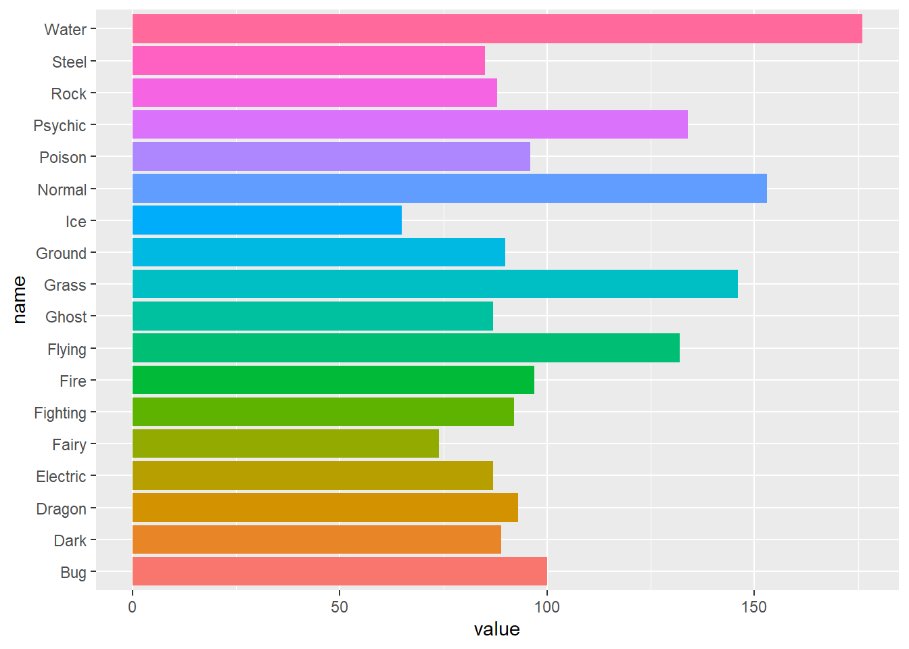
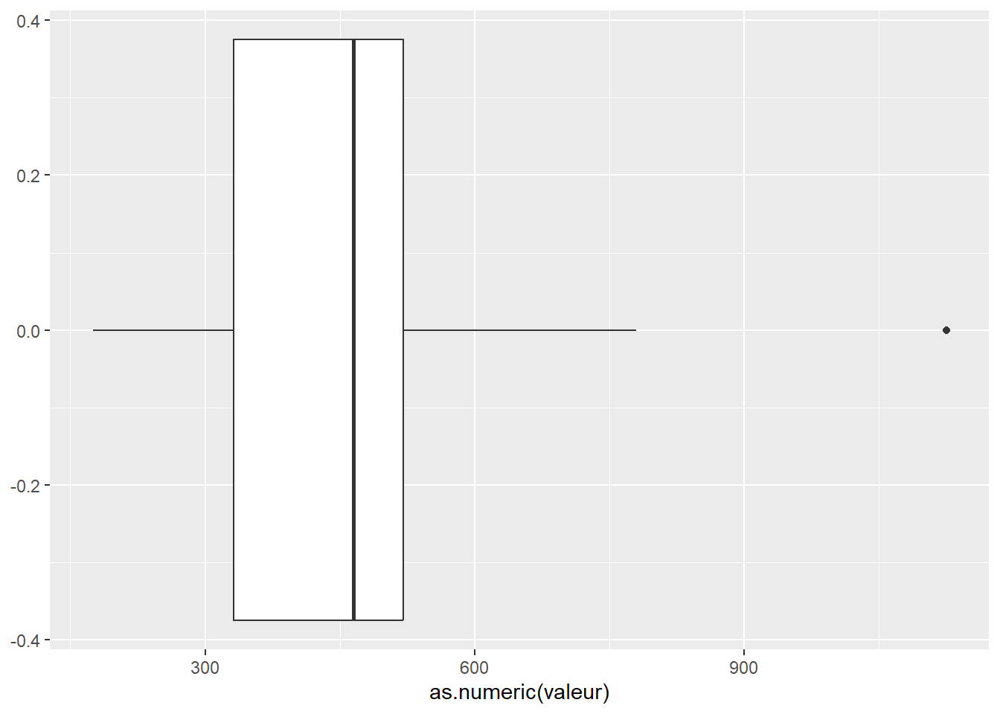
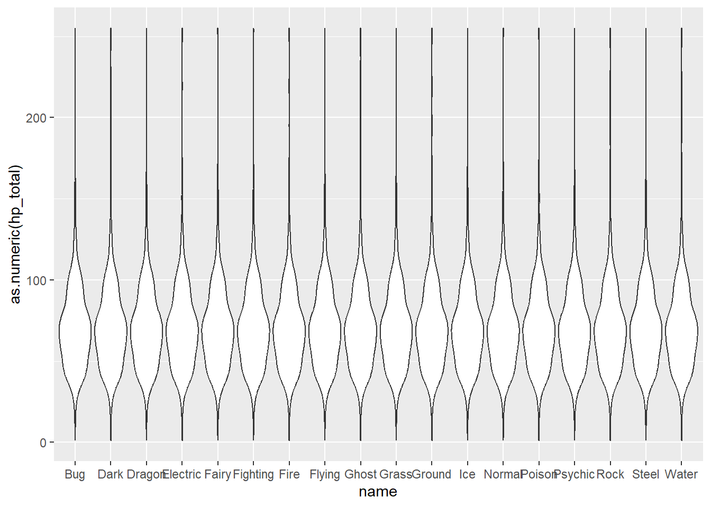
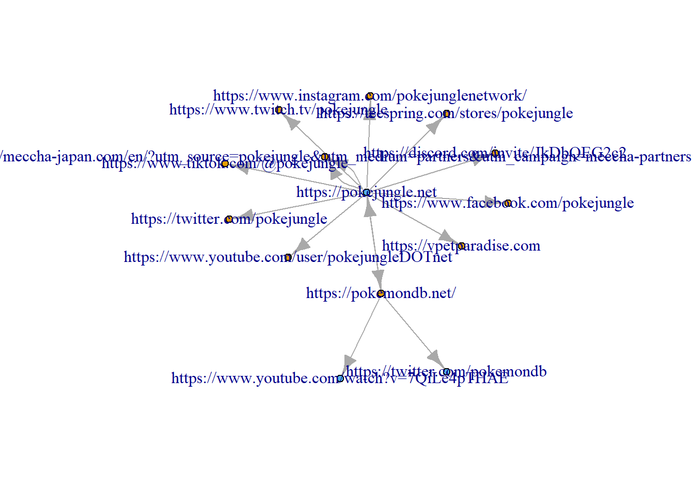
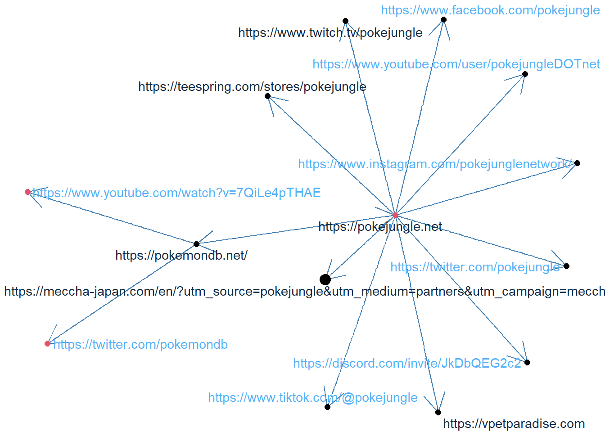

# Charger les packages
library(rvest) #pour scraper
library(igraph) #pour faire les graphes
library(tidyverse) #la grammaire du code
library(ggraph) #pour de jolis réseaux
library(threejs) #pour les représentations 3d
library(htmlwidgets) #pour les fichiers htmlWeb Structure Mining
Scraping
On teste le scraping via R et le package rvest à partir du site sur les pokemons https://pokemondb.net/.
On commence par lire la page web qui nous intéresse.
# Define the URL
url <- "https://pokemondb.net/pokedex/all"
# Read the HTML content
page <- read_html(url)Puis, on extrait les données. Ici, deux méthodes.
Méthode 1 :
# Extract the data
pokemon_data <- tibble(id=page %>%
html_nodes("tbody tr span") %>% html_text(),
nom=page %>%
html_nodes("tbody tr td.cell-name") %>% html_text(),
lien=page %>%
html_nodes("tbody tr td:nth-of-type(2) a") %>% html_attr("href"),
type=page %>%
html_nodes("tbody tr td:nth-of-type(3)") %>% html_text(),
valeur=page %>%
html_nodes("tbody tr td:nth-of-type(4)") %>% html_text(),
hp_total=page %>%
html_nodes("tbody tr td:nth-of-type(5)") %>% html_text(),
attack=page %>%
html_nodes("tbody tr td:nth-of-type(6)") %>% html_text(),
defense=page %>%
html_nodes("tbody tr td:nth-of-type(7)") %>% html_text())Méthode 2 :
pokemon_data_2<-html_table(page)Analyse de données
On doit d’abord gérer la variable type. Ensuite, on pourra regarder quelques graphiques.
pokemon_data<-pokemon_data%>%
separate_wider_regex(type,c(type1=".*(?=[A-Z])",type2=".*[A-Z].*" ), too_few = "align_start", cols_remove = F)
pok_type<-c(unique(pokemon_data$type1),unique(pokemon_data$type2))%>%
unique()%>%setdiff("")
pok_type <- setNames(lapply(pok_type, function(x) if_else(str_detect(pokemon_data$type, x), 1, 0)), pok_type)
pokemon_data <- pokemon_data %>%
mutate(!!!pok_type)Du coup, regardons la répartition des pokemons selon leur type :
pokemon_data%>%pivot_longer(matches("^[A-Z]", ignore.case=F))%>%
ggplot(aes(name, value))+
geom_col(aes(fill=name), show.legend = F)+
coord_flip()
Ensuite, regardons les stats concernant la distribution de la valeur totale et des hp des pokemon :
ggplot(pokemon_data, aes(as.numeric(valeur)))+
geom_boxplot()
pokemon_data%>%pivot_longer(matches("^[A-Z]", ignore.case=F))%>%
ggplot(aes(name,as.numeric(hp_total)))+
geom_violin()
Analyse de la structure du web : exemple simple avec Pokemon
Constituer les données
On récupère les liens d’une page web, on ne garde que les liens externes, et on ajoute quelques variables pour faire de beaux graphiques.
# Fonction pour extraire les liens d'une page web
extract_links <- function(url) {
webpage <- read_html(url)
links <- webpage %>% html_nodes("a") %>% html_attr("href")
link<-tibble(from=url, to=links)%>%filter(str_starts(to, "https")&!str_detect(to,url))
return(link)
}
# URL de départ
start_url <- c('https://pokemondb.net/', "https://pokejungle.net")
# Extraction des liens
links<-lapply(start_url,extract_links)%>%bind_rows()
RS<-c("linkedin", "discord", "tiktok", "twitter", "facebook", "instagram", "youtube")
vertex<-links%>%group_by(from)%>%count(to)%>%
mutate(color=cur_group_id(),
color_label=if_else(str_detect(to, str_c(RS, collapse = "|")), 1, 0),
shape_label=if_else(str_detect(to, str_c(RS, collapse = "|")), "square", "circle"))%>%
ungroup()%>%select(-from)Analyse de réseaux
Représentations graphiques
La base :
# Construction du graphe
G <- graph_from_data_frame(links, directed = TRUE, vertices = vertex)
# print(G)
# Visualisation du graphe
plot(G, vertex.size=5)
Quelques améliorations :
G %>%
ggraph::ggraph(layout = "fr") + #forme du graphe
ggraph::geom_edge_link(edge_colour="steelblue", arrow = arrow()) + #couleur des liens
ggraph::geom_node_point(color = V(G)$color, size = V(G)$n*2) + #couleur et taille des points
ggraph::geom_node_text(aes(label = name, colour=V(G)$color_label), repel = TRUE, show.legend = F) + #affichage du texte
ggplot2::theme_void() #thème vide
Et en 3D :
# Visualisation 3D
gjs <- graphjs(G,layout = layout_with_fr(G, dim=3),
vertex.color = "lightblue",
vertex.size = V(G)$n,
vertex.shape = V(G)$shape_label,
edge.color = "grey",
edge.width = 2,
main="Réseau de Pokemondb", bg="gray10",
curvature=0.1, attraction=0.9, repulsion=0.8, opacity=0.9)%>%
points3d(vertices(.), color=V(G)$color, pch=V(G)$name, size=0.1)
print(gjs)
# saveWidget(gjs, file="network_pokemon.html")
# browseURL("network_pokemon.html")Analyse de centralité
Quelques indices de centralité 1:
betweenness : nombre de fois où un lien est sur le plus court chemin entre deux autres noeuds
degree : nombre de lien associé à chaque noeud
closeness : la proximité à tous les autres liens
between1<-as.data.frame(igraph::betweenness(G))%>%rename(betweenness=1)
between2<-as.data.frame(igraph::degree(G))%>%rename(degree=1)
between3<-as.data.frame(igraph::closeness(G))%>%rename(closeness=1)
between<-cbind(between1, between2,between3)
between$url<-rownames(between)
# between
between%>%filter(betweenness!=0)%>%select(-url) betweenness degree closeness
https://pokemondb.net/ 2 4 0.04347826
https://pokejungle.net 10 13 0.06666667